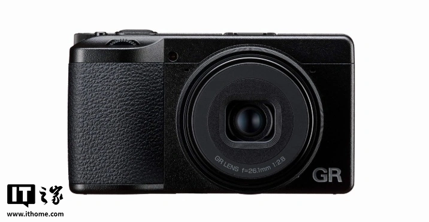
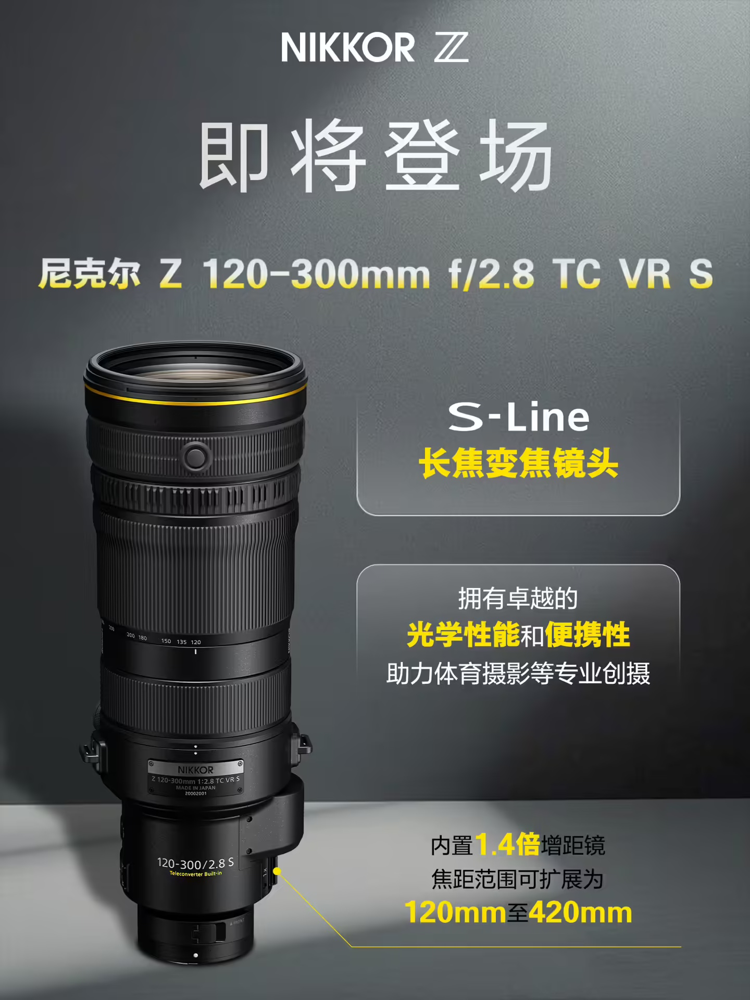
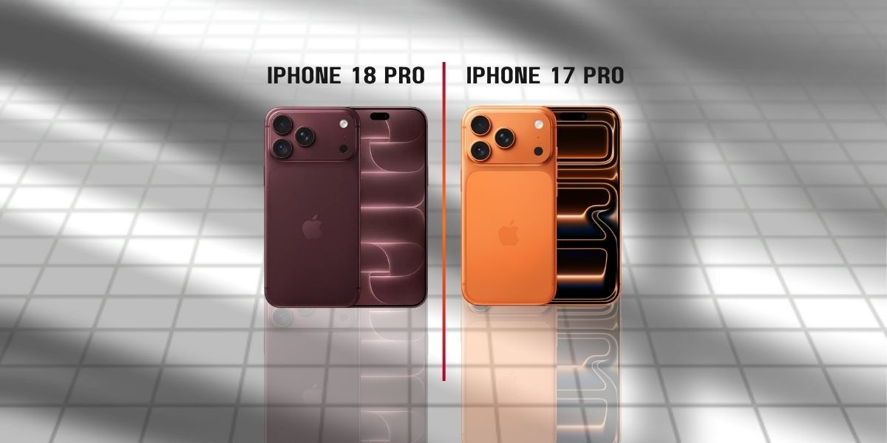
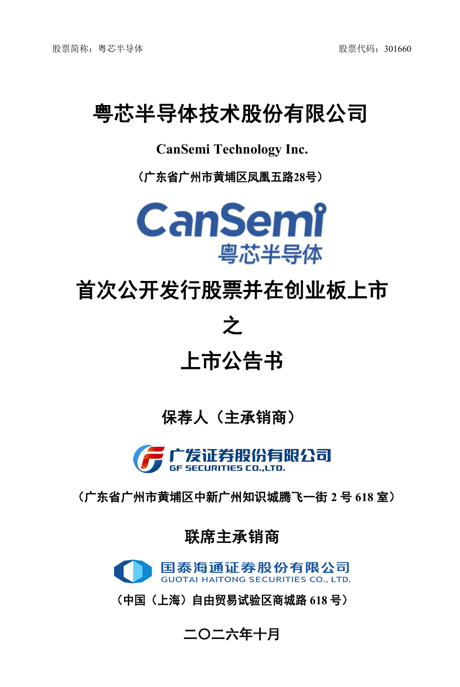
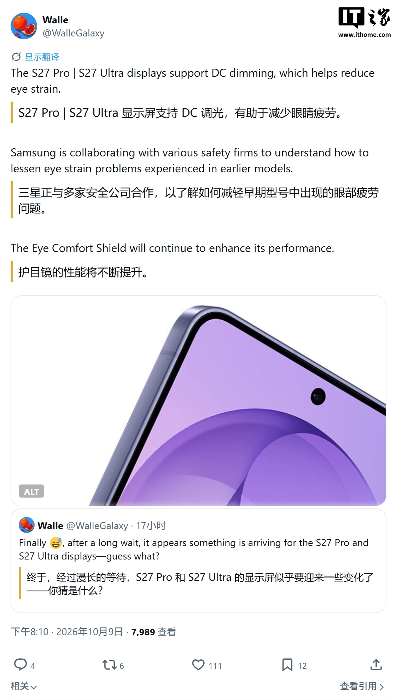
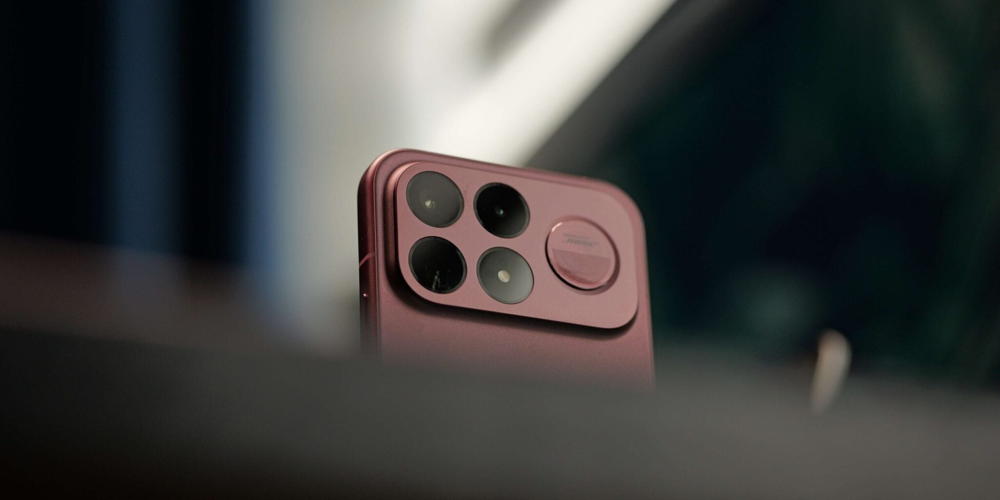
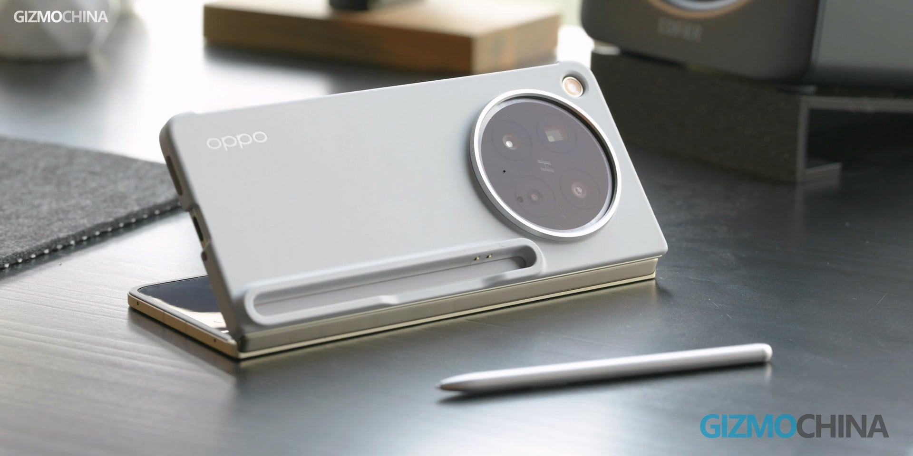
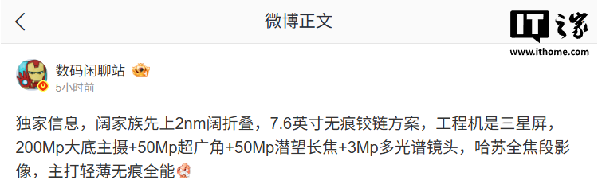

THE TECH EDIT
기술의 변화, 매일 한눈에.
카메라 · 스마트폰 · AI, 해외 테크 소식을 모아 전합니다.
최근 발행2026-10-12
새로 들어온 소식
LATEST STORIES최신 뉴스
전체 3,605개 기사
Ricoh, 신형 카메라 R10010 등록, GR IVx로 예상
레드매직 12 Pro+ 스마트폰, 돌비 애트모스 지원 공식 발표… "역대 레드매직 플래그십 중 최고의 사운드"

OnePlus 16, 새로운 게임 어시스턴트 공개: 사격 디스플레이 강화, 자체 개발 게임 카메라 등
OnePlus 16 스마트폰 예열: 자체 개발 e스포츠 네트워크 칩 G3, 간섭 방지 e스포츠 안테나 최초 탑재, 손가락으로 안테나를 잡아도 네트워크 변동 없음

Nikon 120-300mm f/2.8 렌즈 이달 말 출시, Z70 카메라 11월 출시 전망
머스크, 신용카드 촬영으로 Grok Bot 쇼핑 가능하다고 밝혀… OpenAI 티보 "차라리 카드를 온라인에 올리는 게 낫다"고 비꼬아
iQOO 스마트폰 13종, OriginOS 7 업데이트 출시 일정 확정

아이폰 18 Pro vs 아이폰 17 Pro: 업그레이드할 가치 있을까?

Coolpad 바 타입 스마트폰 후면 디자인 유출, MediaTek Helio G99 프로세서 탑재 예상

CanSemi, 10월 13일 창업판 상장, 발행가 주당 12.01위안
징둥 예약 200만 명 돌파: Apple iPhone Duo 폴더블 디스플레이 스마트폰 15,999위안부터, 사전 판매 5일 전

구르만: Apple, 여러 직영점에서 iPhone Duo 대규모 체험 행사 개최 예정, 150대 이상 전시
Qwen-Image-2.1 Pro 및 Turbo API, 첸원 AI 플랫폼에 출시되어 이미지 생성 및 편집 기능 앱에 통합
생성형 AI 사용 규정 위반으로 칭화대학교 쉬닝 박사, Nikon 2026 현미경 비디오 콘테스트 우승 자격 박탈
팀 쿡, 중국 방문 재개… 첫 방문지는 광저우, Apple iPhone 18 Pro로 촬영한 무형문화유산 영춘권 작품 감상
10월에 출시될 스마트폰 목록

눈의 피로를 줄여줍니다: Samsung Galaxy S27 Pro/Ultra 스마트폰 DC 디밍 지원 루머

POCO F9 Ultra 리뷰: 더 큰 숫자가 더 좋은 스마트폰을 의미할까?

오포 Find N7 유출, 사양, 200MP 쿼드 카메라, 삼성 디스플레이 탑재 전망

모 제조사의 2nm 폴더블 스마트폰 엔지니어링 샘플에 Samsung 디스플레이와 하셀블라드 전 초점 거리 이미징 시스템이 탑재될 예정이며, OPPO 산하 제품으로 예상된다.
원플러스, 오포, 리얼미 스마트폰에 ColorOS 17 오픈 베타 출시
검색 결과가 없습니다
다른 검색어를 입력하거나 필터를 초기화해 보세요.